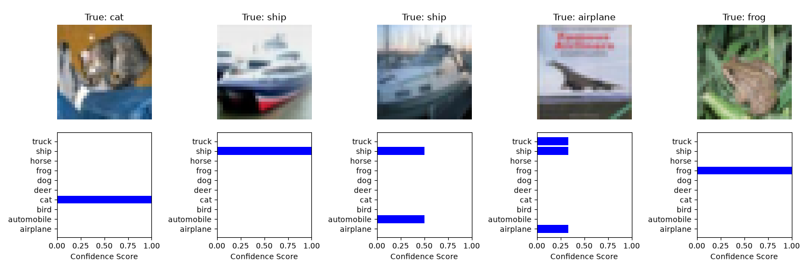
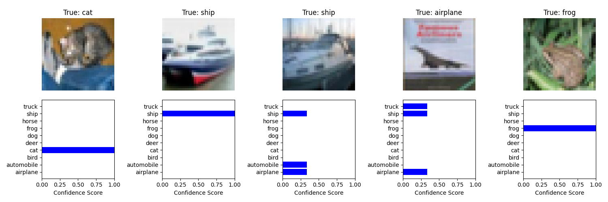
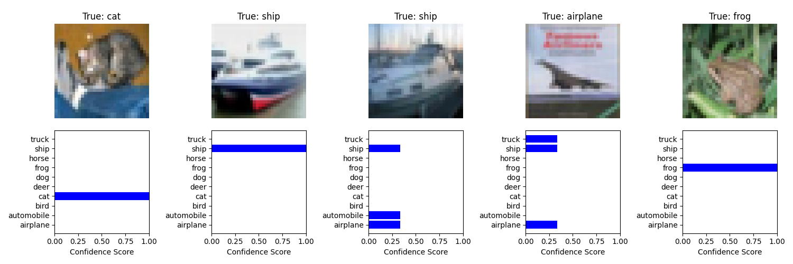

Note
Go to the end to download the full example code.
Conformal Prediction on CIFAR-10 with TorchUncertainty#
We evaluate the model’s performance both before and after applying different conformal predictors (THR, APS, RAPS), and visualize how conformal prediction estimates the prediction sets.
We use the pretrained ResNet models we provide on Hugging Face.
import matplotlib.pyplot as plt
import numpy as np
import torch
from huggingface_hub import hf_hub_download
from torch_uncertainty import TUTrainer
from torch_uncertainty.datamodules import CIFAR10DataModule
from torch_uncertainty.models.classification.resnet import resnet
from torch_uncertainty.post_processing import ConformalClsAPS, ConformalClsRAPS, ConformalClsTHR
from torch_uncertainty.routines import ClassificationRoutine
1. Load pretrained model from Hugging Face repository#
We use a ResNet18 model trained on CIFAR-10, provided by the TorchUncertainty team
ckpt_path = hf_hub_download(repo_id="torch-uncertainty/resnet18_c10", filename="resnet18_c10.ckpt")
model = resnet(in_channels=3, num_classes=10, arch=18, conv_bias=False, style="cifar")
ckpt = torch.load(ckpt_path, weights_only=True)
model.load_state_dict(ckpt)
model = model.cuda().eval()
2. Load CIFAR-10 Dataset & Define Dataloaders#
We set eval_ood to True to evaluate the performance of Conformal scores for detecting out-of-distribution samples. In this case, since we use a model trained on the full training set, we use the test set to as calibration set for the Conformal methods and for its evaluation. This is not a proper way to evaluate the coverage.
BATCH_SIZE = 128
datamodule = CIFAR10DataModule(
root="./data",
batch_size=BATCH_SIZE,
num_workers=8,
eval_ood=True,
postprocess_set="test",
)
datamodule.prepare_data()
datamodule.setup()
0%| | 0.00/170M [00:00<?, ?B/s]
0%| | 65.5k/170M [00:00<07:13, 394kB/s]
0%| | 229k/170M [00:00<03:53, 728kB/s]
0%| | 393k/170M [00:00<03:21, 843kB/s]
0%| | 623k/170M [00:02<12:30, 226kB/s]
0%| | 688k/170M [00:02<11:36, 244kB/s]
0%| | 819k/170M [00:02<11:26, 247kB/s]
1%| | 885k/170M [00:03<11:20, 249kB/s]
1%| | 950k/170M [00:03<10:27, 270kB/s]
1%| | 1.15M/170M [00:03<06:36, 427kB/s]
1%| | 1.41M/170M [00:03<04:18, 654kB/s]
1%| | 1.57M/170M [00:04<05:43, 492kB/s]
1%| | 1.67M/170M [00:04<06:59, 402kB/s]
1%| | 1.80M/170M [00:04<06:02, 465kB/s]
1%| | 2.03M/170M [00:04<04:25, 634kB/s]
1%| | 2.13M/170M [00:05<04:30, 622kB/s]
1%|▏ | 2.26M/170M [00:05<04:14, 661kB/s]
1%|▏ | 2.39M/170M [00:05<04:38, 604kB/s]
1%|▏ | 2.49M/170M [00:05<06:23, 438kB/s]
1%|▏ | 2.56M/170M [00:09<29:29, 94.9kB/s]
2%|▏ | 2.62M/170M [00:10<34:32, 81.0kB/s]
2%|▏ | 2.65M/170M [00:10<34:36, 80.8kB/s]
2%|▏ | 2.69M/170M [00:11<33:14, 84.1kB/s]
2%|▏ | 2.72M/170M [00:11<31:43, 88.2kB/s]
2%|▏ | 2.75M/170M [00:11<31:10, 89.7kB/s]
2%|▏ | 2.79M/170M [00:11<28:20, 98.6kB/s]
2%|▏ | 2.82M/170M [00:12<25:43, 109kB/s]
2%|▏ | 2.85M/170M [00:12<22:46, 123kB/s]
2%|▏ | 2.88M/170M [00:12<22:31, 124kB/s]
2%|▏ | 2.92M/170M [00:12<20:17, 138kB/s]
2%|▏ | 2.95M/170M [00:12<19:26, 144kB/s]
2%|▏ | 2.98M/170M [00:13<17:56, 156kB/s]
2%|▏ | 3.01M/170M [00:13<17:56, 156kB/s]
2%|▏ | 3.05M/170M [00:13<15:54, 176kB/s]
2%|▏ | 3.08M/170M [00:13<16:26, 170kB/s]
2%|▏ | 3.11M/170M [00:13<14:57, 187kB/s]
2%|▏ | 3.15M/170M [00:13<13:57, 200kB/s]
2%|▏ | 3.18M/170M [00:14<12:51, 217kB/s]
2%|▏ | 3.21M/170M [00:14<12:16, 227kB/s]
2%|▏ | 3.28M/170M [00:14<10:47, 258kB/s]
2%|▏ | 3.31M/170M [00:14<11:40, 239kB/s]
2%|▏ | 3.34M/170M [00:14<11:46, 237kB/s]
2%|▏ | 3.38M/170M [00:14<11:59, 232kB/s]
2%|▏ | 3.41M/170M [00:14<11:47, 236kB/s]
2%|▏ | 3.44M/170M [00:15<11:58, 232kB/s]
2%|▏ | 3.47M/170M [00:15<11:14, 248kB/s]
2%|▏ | 3.54M/170M [00:15<10:14, 272kB/s]
2%|▏ | 3.60M/170M [00:15<09:46, 285kB/s]
2%|▏ | 3.67M/170M [00:15<09:21, 297kB/s]
2%|▏ | 3.74M/170M [00:16<08:51, 314kB/s]
2%|▏ | 3.77M/170M [00:16<09:01, 308kB/s]
2%|▏ | 3.83M/170M [00:16<08:20, 333kB/s]
2%|▏ | 3.90M/170M [00:16<07:55, 351kB/s]
2%|▏ | 3.96M/170M [00:16<07:38, 363kB/s]
2%|▏ | 4.03M/170M [00:16<07:02, 394kB/s]
2%|▏ | 4.10M/170M [00:16<07:03, 393kB/s]
2%|▏ | 4.16M/170M [00:17<06:46, 409kB/s]
2%|▏ | 4.23M/170M [00:17<06:28, 428kB/s]
3%|▎ | 4.29M/170M [00:17<06:05, 454kB/s]
3%|▎ | 4.36M/170M [00:17<06:15, 443kB/s]
3%|▎ | 4.42M/170M [00:17<05:43, 483kB/s]
3%|▎ | 4.49M/170M [00:17<05:50, 473kB/s]
3%|▎ | 4.55M/170M [00:17<05:26, 508kB/s]
3%|▎ | 4.62M/170M [00:18<05:37, 491kB/s]
3%|▎ | 4.69M/170M [00:18<05:17, 522kB/s]
3%|▎ | 4.75M/170M [00:18<05:08, 537kB/s]
3%|▎ | 4.82M/170M [00:18<05:02, 547kB/s]
3%|▎ | 4.88M/170M [00:18<04:53, 565kB/s]
3%|▎ | 4.95M/170M [00:18<04:50, 570kB/s]
3%|▎ | 5.01M/170M [00:18<04:49, 571kB/s]
3%|▎ | 5.11M/170M [00:18<04:26, 621kB/s]
3%|▎ | 5.18M/170M [00:18<04:32, 607kB/s]
3%|▎ | 5.28M/170M [00:19<04:17, 642kB/s]
3%|▎ | 5.34M/170M [00:19<04:24, 624kB/s]
3%|▎ | 5.44M/170M [00:19<04:12, 654kB/s]
3%|▎ | 5.54M/170M [00:19<04:04, 674kB/s]
3%|▎ | 5.64M/170M [00:19<04:03, 677kB/s]
3%|▎ | 5.73M/170M [00:19<03:59, 687kB/s]
3%|▎ | 5.83M/170M [00:19<03:46, 728kB/s]
3%|▎ | 5.93M/170M [00:20<03:47, 722kB/s]
4%|▎ | 6.03M/170M [00:20<03:39, 750kB/s]
4%|▎ | 6.13M/170M [00:20<03:40, 745kB/s]
4%|▎ | 6.23M/170M [00:20<03:34, 766kB/s]
4%|▎ | 6.32M/170M [00:20<03:35, 760kB/s]
4%|▍ | 6.42M/170M [00:20<03:30, 780kB/s]
4%|▍ | 6.52M/170M [00:20<03:33, 766kB/s]
4%|▍ | 6.65M/170M [00:20<03:12, 850kB/s]
4%|▍ | 6.75M/170M [00:21<03:20, 816kB/s]
4%|▍ | 6.85M/170M [00:21<03:20, 817kB/s]
4%|▍ | 6.98M/170M [00:21<03:11, 853kB/s]
4%|▍ | 7.08M/170M [00:21<03:10, 859kB/s]
4%|▍ | 7.18M/170M [00:21<03:03, 888kB/s]
4%|▍ | 7.27M/170M [00:21<03:07, 872kB/s]
4%|▍ | 7.41M/170M [00:21<02:56, 925kB/s]
4%|▍ | 7.54M/170M [00:21<02:51, 950kB/s]
4%|▍ | 7.67M/170M [00:22<02:45, 982kB/s]
5%|▍ | 7.80M/170M [00:22<02:34, 1.05MB/s]
5%|▍ | 7.93M/170M [00:22<02:31, 1.08MB/s]
5%|▍ | 8.06M/170M [00:22<02:27, 1.10MB/s]
5%|▍ | 8.22M/170M [00:22<02:15, 1.20MB/s]
5%|▍ | 8.39M/170M [00:22<02:09, 1.25MB/s]
5%|▌ | 8.55M/170M [00:22<02:05, 1.29MB/s]
5%|▌ | 8.75M/170M [00:22<01:58, 1.36MB/s]
5%|▌ | 8.95M/170M [00:22<01:52, 1.44MB/s]
5%|▌ | 9.14M/170M [00:23<01:44, 1.54MB/s]
5%|▌ | 9.34M/170M [00:23<01:42, 1.57MB/s]
6%|▌ | 9.57M/170M [00:23<01:36, 1.67MB/s]
6%|▌ | 9.80M/170M [00:23<01:29, 1.79MB/s]
6%|▌ | 9.99M/170M [00:23<01:29, 1.80MB/s]
6%|▌ | 10.2M/170M [00:23<01:23, 1.92MB/s]
6%|▌ | 10.5M/170M [00:23<01:18, 2.04MB/s]
6%|▋ | 10.7M/170M [00:23<01:14, 2.14MB/s]
6%|▋ | 11.0M/170M [00:23<01:12, 2.20MB/s]
7%|▋ | 11.3M/170M [00:24<01:08, 2.31MB/s]
7%|▋ | 11.6M/170M [00:24<01:05, 2.43MB/s]
7%|▋ | 11.9M/170M [00:24<01:02, 2.53MB/s]
7%|▋ | 12.2M/170M [00:24<01:01, 2.59MB/s]
7%|▋ | 12.5M/170M [00:24<00:58, 2.69MB/s]
7%|▋ | 12.8M/170M [00:24<00:56, 2.82MB/s]
8%|▊ | 13.1M/170M [00:24<00:54, 2.89MB/s]
8%|▊ | 13.5M/170M [00:24<00:52, 3.01MB/s]
8%|▊ | 13.8M/170M [00:24<00:50, 3.11MB/s]
8%|▊ | 14.2M/170M [00:25<00:48, 3.22MB/s]
9%|▊ | 14.6M/170M [00:25<00:46, 3.33MB/s]
9%|▉ | 15.0M/170M [00:25<00:44, 3.49MB/s]
9%|▉ | 15.4M/170M [00:25<00:42, 3.62MB/s]
9%|▉ | 15.9M/170M [00:25<00:40, 3.80MB/s]
10%|▉ | 16.3M/170M [00:25<00:38, 4.01MB/s]
10%|▉ | 16.8M/170M [00:25<00:36, 4.16MB/s]
10%|█ | 17.3M/170M [00:25<00:35, 4.30MB/s]
10%|█ | 17.8M/170M [00:25<00:33, 4.51MB/s]
11%|█ | 18.3M/170M [00:25<00:32, 4.70MB/s]
11%|█ | 18.8M/170M [00:26<00:31, 4.85MB/s]
11%|█▏ | 19.4M/170M [00:26<00:30, 4.98MB/s]
12%|█▏ | 20.0M/170M [00:26<00:29, 5.17MB/s]
12%|█▏ | 20.6M/170M [00:26<00:28, 5.34MB/s]
12%|█▏ | 21.2M/170M [00:26<00:26, 5.58MB/s]
13%|█▎ | 21.8M/170M [00:26<00:26, 5.66MB/s]
13%|█▎ | 22.4M/170M [00:26<00:25, 5.90MB/s]
14%|█▎ | 23.1M/170M [00:26<00:24, 6.06MB/s]
14%|█▍ | 23.8M/170M [00:26<00:23, 6.28MB/s]
14%|█▍ | 24.5M/170M [00:26<00:22, 6.49MB/s]
15%|█▍ | 25.2M/170M [00:27<00:21, 6.64MB/s]
15%|█▌ | 26.0M/170M [00:27<00:21, 6.81MB/s]
16%|█▌ | 26.8M/170M [00:27<00:20, 7.06MB/s]
16%|█▌ | 27.6M/170M [00:27<00:19, 7.33MB/s]
17%|█▋ | 28.4M/170M [00:27<00:19, 7.42MB/s]
17%|█▋ | 29.3M/170M [00:27<00:18, 7.72MB/s]
18%|█▊ | 30.1M/170M [00:27<00:17, 7.99MB/s]
18%|█▊ | 31.0M/170M [00:27<00:16, 8.21MB/s]
19%|█▊ | 31.9M/170M [00:27<00:16, 8.36MB/s]
19%|█▉ | 32.9M/170M [00:28<00:15, 8.63MB/s]
20%|█▉ | 33.8M/170M [00:28<00:15, 8.88MB/s]
20%|██ | 34.9M/170M [00:28<00:14, 9.21MB/s]
21%|██ | 35.8M/170M [00:28<00:14, 9.38MB/s]
22%|██▏ | 36.9M/170M [00:28<00:14, 9.49MB/s]
22%|██▏ | 38.0M/170M [00:28<00:13, 9.88MB/s]
23%|██▎ | 39.1M/170M [00:28<00:12, 10.2MB/s]
24%|██▎ | 40.2M/170M [00:28<00:12, 10.4MB/s]
24%|██▍ | 41.4M/170M [00:28<00:12, 10.7MB/s]
25%|██▍ | 42.5M/170M [00:28<00:11, 11.0MB/s]
26%|██▌ | 43.7M/170M [00:29<00:11, 11.2MB/s]
26%|██▋ | 45.0M/170M [00:29<00:10, 11.6MB/s]
27%|██▋ | 46.3M/170M [00:29<00:10, 11.9MB/s]
28%|██▊ | 47.5M/170M [00:29<00:10, 12.0MB/s]
29%|██▊ | 48.9M/170M [00:29<00:09, 12.4MB/s]
29%|██▉ | 50.2M/170M [00:29<00:09, 12.7MB/s]
30%|███ | 51.7M/170M [00:29<00:09, 13.2MB/s]
31%|███ | 53.1M/170M [00:29<00:08, 13.5MB/s]
32%|███▏ | 54.5M/170M [00:29<00:08, 13.6MB/s]
33%|███▎ | 56.1M/170M [00:29<00:08, 14.1MB/s]
34%|███▍ | 57.6M/170M [00:30<00:07, 14.3MB/s]
35%|███▍ | 59.2M/170M [00:30<00:07, 14.8MB/s]
36%|███▌ | 60.8M/170M [00:30<00:07, 15.0MB/s]
37%|███▋ | 62.4M/170M [00:30<00:07, 15.3MB/s]
38%|███▊ | 64.1M/170M [00:30<00:06, 15.8MB/s]
39%|███▊ | 65.8M/170M [00:30<00:06, 16.1MB/s]
40%|███▉ | 67.6M/170M [00:30<00:06, 16.4MB/s]
41%|████ | 69.4M/170M [00:30<00:06, 16.8MB/s]
42%|████▏ | 71.2M/170M [00:30<00:05, 17.1MB/s]
43%|████▎ | 73.1M/170M [00:30<00:05, 17.6MB/s]
44%|████▍ | 75.1M/170M [00:31<00:05, 18.1MB/s]
45%|████▌ | 77.0M/170M [00:31<00:05, 18.5MB/s]
46%|████▋ | 78.9M/170M [00:31<00:04, 18.7MB/s]
47%|████▋ | 81.0M/170M [00:31<00:04, 19.2MB/s]
49%|████▊ | 83.1M/170M [00:31<00:04, 19.7MB/s]
50%|████▉ | 85.2M/170M [00:31<00:04, 20.1MB/s]
51%|█████ | 87.3M/170M [00:31<00:04, 20.4MB/s]
53%|█████▎ | 89.6M/170M [00:31<00:03, 20.9MB/s]
54%|█████▍ | 91.8M/170M [00:31<00:03, 21.3MB/s]
55%|█████▌ | 94.1M/170M [00:31<00:03, 21.8MB/s]
57%|█████▋ | 96.5M/170M [00:32<00:03, 22.4MB/s]
58%|█████▊ | 98.9M/170M [00:32<00:03, 22.8MB/s]
59%|█████▉ | 101M/170M [00:32<00:03, 23.0MB/s]
61%|██████ | 104M/170M [00:32<00:02, 23.6MB/s]
62%|██████▏ | 106M/170M [00:32<00:02, 24.1MB/s]
64%|██████▍ | 109M/170M [00:32<00:02, 24.6MB/s]
65%|██████▌ | 112M/170M [00:32<00:02, 25.2MB/s]
67%|██████▋ | 114M/170M [00:32<00:02, 25.3MB/s]
69%|██████▊ | 117M/170M [00:32<00:02, 26.1MB/s]
70%|███████ | 120M/170M [00:32<00:01, 26.5MB/s]
72%|███████▏ | 123M/170M [00:33<00:01, 27.2MB/s]
74%|███████▎ | 126M/170M [00:33<00:01, 27.4MB/s]
75%|███████▌ | 128M/170M [00:33<00:01, 27.7MB/s]
77%|███████▋ | 132M/170M [00:33<00:01, 28.9MB/s]
79%|███████▉ | 135M/170M [00:33<00:01, 28.8MB/s]
81%|████████ | 138M/170M [00:33<00:01, 29.2MB/s]
82%|████████▏ | 141M/170M [00:33<00:01, 29.6MB/s]
84%|████████▍ | 144M/170M [00:33<00:00, 30.4MB/s]
86%|████████▌ | 147M/170M [00:33<00:00, 30.7MB/s]
88%|████████▊ | 150M/170M [00:33<00:00, 31.7MB/s]
90%|█████████ | 154M/170M [00:34<00:00, 31.8MB/s]
92%|█████████▏| 157M/170M [00:34<00:00, 32.5MB/s]
94%|█████████▍| 160M/170M [00:34<00:00, 32.0MB/s]
96%|█████████▌| 164M/170M [00:34<00:00, 32.1MB/s]
98%|█████████▊| 168M/170M [00:34<00:00, 33.3MB/s]
100%|██████████| 170M/170M [00:34<00:00, 4.93MB/s]
0%| | 0.00/64.3M [00:00<?, ?B/s]
0%| | 32.8k/64.3M [00:00<04:27, 241kB/s]
0%| | 65.5k/64.3M [00:00<04:28, 239kB/s]
0%| | 98.3k/64.3M [00:00<04:27, 240kB/s]
0%| | 131k/64.3M [00:00<04:27, 239kB/s]
0%| | 197k/64.3M [00:00<03:16, 326kB/s]
0%| | 295k/64.3M [00:00<02:19, 459kB/s]
1%| | 426k/64.3M [00:00<01:42, 621kB/s]
1%| | 557k/64.3M [00:01<01:27, 728kB/s]
1%| | 786k/64.3M [00:01<01:02, 1.02MB/s]
2%|▏ | 1.05M/64.3M [00:01<00:48, 1.30MB/s]
2%|▏ | 1.41M/64.3M [00:01<00:36, 1.71MB/s]
3%|▎ | 1.93M/64.3M [00:01<00:26, 2.35MB/s]
4%|▍ | 2.62M/64.3M [00:01<00:19, 3.16MB/s]
5%|▌ | 3.51M/64.3M [00:01<00:14, 4.16MB/s]
7%|▋ | 4.65M/64.3M [00:02<00:11, 5.41MB/s]
10%|▉ | 6.13M/64.3M [00:02<00:08, 7.03MB/s]
12%|█▏ | 7.90M/64.3M [00:02<00:06, 8.80MB/s]
16%|█▌ | 10.1M/64.3M [00:02<00:04, 11.0MB/s]
20%|█▉ | 12.7M/64.3M [00:02<00:03, 13.4MB/s]
24%|██▍ | 15.7M/64.3M [00:02<00:03, 15.9MB/s]
30%|██▉ | 19.2M/64.3M [00:02<00:02, 18.8MB/s]
36%|███▌ | 22.9M/64.3M [00:03<00:01, 21.2MB/s]
41%|████▏ | 26.6M/64.3M [00:03<00:01, 23.0MB/s]
47%|████▋ | 30.3M/64.3M [00:03<00:01, 23.2MB/s]
53%|█████▎ | 34.0M/64.3M [00:03<00:01, 24.0MB/s]
59%|█████▊ | 37.7M/64.3M [00:03<00:01, 24.5MB/s]
64%|██████▍ | 41.3M/64.3M [00:03<00:00, 24.9MB/s]
70%|██████▉ | 45.0M/64.3M [00:03<00:00, 25.1MB/s]
76%|███████▌ | 48.7M/64.3M [00:04<00:00, 25.3MB/s]
81%|████████▏ | 52.3M/64.3M [00:04<00:00, 25.5MB/s]
87%|████████▋ | 56.0M/64.3M [00:04<00:00, 25.6MB/s]
93%|█████████▎| 59.7M/64.3M [00:04<00:00, 25.7MB/s]
99%|█████████▊| 63.3M/64.3M [00:04<00:00, 25.8MB/s]
100%|██████████| 64.3M/64.3M [00:04<00:00, 14.0MB/s]
3. Define the Lightning Trainer#
trainer = TUTrainer(accelerator="gpu", devices=1, max_epochs=5, enable_progress_bar=False)
4. Function to Visualize the Prediction Sets#
def visualize_prediction_sets(inputs, labels, confidence_scores, classes, num_examples=5) -> None:
_, axs = plt.subplots(2, num_examples, figsize=(15, 5))
for i in range(num_examples):
ax = axs[0, i]
img = np.clip(
inputs[i].permute(1, 2, 0).cpu().numpy() * datamodule.std + datamodule.mean, 0, 1
)
ax.imshow(img)
ax.set_title(f"True: {classes[labels[i]]}")
ax.axis("off")
ax = axs[1, i]
for j in range(len(classes)):
ax.barh(classes[j], confidence_scores[i, j], color="blue")
ax.set_xlim(0, 1)
ax.set_xlabel("Confidence Score")
plt.tight_layout()
plt.show()
5. Estimate Prediction Sets with ConformalClsTHR#
Using alpha=0.01, we aim for a 1% error rate.
print("[Phase 2]: ConformalClsTHR calibration")
conformal_model = ConformalClsTHR(alpha=0.01, device="cuda")
routine_thr = ClassificationRoutine(
num_classes=10,
model=model,
loss=None, # No loss needed for evaluation
eval_ood=True,
post_processing=conformal_model,
ood_criterion="post_processing",
)
perf_thr = trainer.test(routine_thr, datamodule=datamodule)
[Phase 2]: ConformalClsTHR calibration
0%| | 0/79 [00:00<?, ?it/s]
1%|▏ | 1/79 [00:00<00:17, 4.42it/s]
10%|█ | 8/79 [00:00<00:02, 28.99it/s]
18%|█▊ | 14/79 [00:00<00:01, 39.12it/s]
25%|██▌ | 20/79 [00:00<00:01, 45.74it/s]
33%|███▎ | 26/79 [00:00<00:01, 50.16it/s]
41%|████ | 32/79 [00:00<00:00, 53.20it/s]
48%|████▊ | 38/79 [00:00<00:00, 55.26it/s]
56%|█████▌ | 44/79 [00:00<00:00, 56.67it/s]
63%|██████▎ | 50/79 [00:01<00:00, 57.61it/s]
71%|███████ | 56/79 [00:01<00:00, 58.27it/s]
78%|███████▊ | 62/79 [00:01<00:00, 58.69it/s]
86%|████████▌ | 68/79 [00:01<00:00, 59.02it/s]
94%|█████████▎| 74/79 [00:01<00:00, 59.22it/s]
100%|██████████| 79/79 [00:01<00:00, 51.18it/s]
┏━━━━━━━━━━━━━━┳━━━━━━━━━━━━━━━━━━━━━━━━━━━┓
┃ Test metric ┃ Classification ┃
┡━━━━━━━━━━━━━━╇━━━━━━━━━━━━━━━━━━━━━━━━━━━┩
│ Acc │ 93.380% │
│ Brier │ 0.10812 │
│ Entropy │ 0.08849 │
│ NLL │ 0.26405 │
└──────────────┴───────────────────────────┘
┏━━━━━━━━━━━━━━┳━━━━━━━━━━━━━━━━━━━━━━━━━━━┓
┃ Test metric ┃ Calibration ┃
┡━━━━━━━━━━━━━━╇━━━━━━━━━━━━━━━━━━━━━━━━━━━┩
│ ECE │ 3.537% │
│ aECE │ 3.500% │
└──────────────┴───────────────────────────┘
┏━━━━━━━━━━━━━━┳━━━━━━━━━━━━━━━━━━━━━━━━━━━┓
┃ Test metric ┃ OOD Detection ┃
┡━━━━━━━━━━━━━━╇━━━━━━━━━━━━━━━━━━━━━━━━━━━┩
│ AUPR │ 86.585% │
│ AUROC │ 79.256% │
│ Entropy │ 0.08849 │
│ FPR95 │ 100.000% │
└──────────────┴───────────────────────────┘
┏━━━━━━━━━━━━━━┳━━━━━━━━━━━━━━━━━━━━━━━━━━━┓
┃ Test metric ┃ Selective Classification ┃
┡━━━━━━━━━━━━━━╇━━━━━━━━━━━━━━━━━━━━━━━━━━━┩
│ AUGRC │ 0.779% │
│ AURC │ 0.959% │
│ Cov@5Risk │ 96.510% │
│ Risk@80Cov │ 1.200% │
└──────────────┴───────────────────────────┘
┏━━━━━━━━━━━━━━┳━━━━━━━━━━━━━━━━━━━━━━━━━━━┓
┃ Test metric ┃ Post-Processing ┃
┡━━━━━━━━━━━━━━╇━━━━━━━━━━━━━━━━━━━━━━━━━━━┩
│ CoverageRate │ 0.99000 │
│ SetSize │ 1.52320 │
└──────────────┴───────────────────────────┘
┏━━━━━━━━━━━━━━┳━━━━━━━━━━━━━━━━━━━━━━━━━━━┓
┃ Test metric ┃ Complexity ┃
┡━━━━━━━━━━━━━━╇━━━━━━━━━━━━━━━━━━━━━━━━━━━┩
│ flops │ 142.19 G │
│ params │ 11.17 M │
└──────────────┴───────────────────────────┘
6. Visualization of ConformalClsTHR prediction sets#
inputs, labels = next(iter(datamodule.test_dataloader()[0]))
conformal_model.cuda()
confidence_scores = conformal_model.conformal(inputs.cuda())
classes = datamodule.test.classes
visualize_prediction_sets(inputs, labels, confidence_scores[:5].cpu(), classes)

7. Estimate Prediction Sets with ConformalClsAPS#
print("[Phase 3]: ConformalClsAPS calibration")
conformal_model = ConformalClsAPS(alpha=0.01, device="cuda", enable_ts=False)
routine_aps = ClassificationRoutine(
num_classes=10,
model=model,
loss=None, # No loss needed for evaluation
eval_ood=True,
post_processing=conformal_model,
ood_criterion="post_processing",
)
perf_aps = trainer.test(routine_aps, datamodule=datamodule)
conformal_model.cuda()
confidence_scores = conformal_model.conformal(inputs.cuda())
visualize_prediction_sets(inputs, labels, confidence_scores[:5].cpu(), classes)

[Phase 3]: ConformalClsAPS calibration
┏━━━━━━━━━━━━━━┳━━━━━━━━━━━━━━━━━━━━━━━━━━━┓
┃ Test metric ┃ Classification ┃
┡━━━━━━━━━━━━━━╇━━━━━━━━━━━━━━━━━━━━━━━━━━━┩
│ Acc │ 93.380% │
│ Brier │ 0.10812 │
│ Entropy │ 0.08849 │
│ NLL │ 0.26405 │
└──────────────┴───────────────────────────┘
┏━━━━━━━━━━━━━━┳━━━━━━━━━━━━━━━━━━━━━━━━━━━┓
┃ Test metric ┃ Calibration ┃
┡━━━━━━━━━━━━━━╇━━━━━━━━━━━━━━━━━━━━━━━━━━━┩
│ ECE │ 3.537% │
│ aECE │ 3.500% │
└──────────────┴───────────────────────────┘
┏━━━━━━━━━━━━━━┳━━━━━━━━━━━━━━━━━━━━━━━━━━━┓
┃ Test metric ┃ OOD Detection ┃
┡━━━━━━━━━━━━━━╇━━━━━━━━━━━━━━━━━━━━━━━━━━━┩
│ AUPR │ 84.910% │
│ AUROC │ 77.157% │
│ Entropy │ 0.08849 │
│ FPR95 │ 100.000% │
└──────────────┴───────────────────────────┘
┏━━━━━━━━━━━━━━┳━━━━━━━━━━━━━━━━━━━━━━━━━━━┓
┃ Test metric ┃ Selective Classification ┃
┡━━━━━━━━━━━━━━╇━━━━━━━━━━━━━━━━━━━━━━━━━━━┩
│ AUGRC │ 0.779% │
│ AURC │ 0.959% │
│ Cov@5Risk │ 96.510% │
│ Risk@80Cov │ 1.200% │
└──────────────┴───────────────────────────┘
┏━━━━━━━━━━━━━━┳━━━━━━━━━━━━━━━━━━━━━━━━━━━┓
┃ Test metric ┃ Post-Processing ┃
┡━━━━━━━━━━━━━━╇━━━━━━━━━━━━━━━━━━━━━━━━━━━┩
│ CoverageRate │ 0.99010 │
│ SetSize │ 1.72650 │
└──────────────┴───────────────────────────┘
┏━━━━━━━━━━━━━━┳━━━━━━━━━━━━━━━━━━━━━━━━━━━┓
┃ Test metric ┃ Complexity ┃
┡━━━━━━━━━━━━━━╇━━━━━━━━━━━━━━━━━━━━━━━━━━━┩
│ flops │ 142.19 G │
│ params │ 11.17 M │
└──────────────┴───────────────────────────┘
8. Estimate Prediction Sets with ConformalClsRAPS#
print("[Phase 4]: ConformalClsRAPS calibration")
conformal_model = ConformalClsRAPS(
alpha=0.01, regularization_rank=3, penalty=0.002, model=model, device="cuda", enable_ts=False
)
routine_raps = ClassificationRoutine(
num_classes=10,
model=model,
loss=None, # No loss needed for evaluation
eval_ood=True,
post_processing=conformal_model,
ood_criterion="post_processing",
)
perf_raps = trainer.test(routine_raps, datamodule=datamodule)
conformal_model.cuda()
confidence_scores = conformal_model.conformal(inputs.cuda())
visualize_prediction_sets(inputs, labels, confidence_scores[:5].cpu(), classes)

[Phase 4]: ConformalClsRAPS calibration
┏━━━━━━━━━━━━━━┳━━━━━━━━━━━━━━━━━━━━━━━━━━━┓
┃ Test metric ┃ Classification ┃
┡━━━━━━━━━━━━━━╇━━━━━━━━━━━━━━━━━━━━━━━━━━━┩
│ Acc │ 93.380% │
│ Brier │ 0.10812 │
│ Entropy │ 0.08849 │
│ NLL │ 0.26405 │
└──────────────┴───────────────────────────┘
┏━━━━━━━━━━━━━━┳━━━━━━━━━━━━━━━━━━━━━━━━━━━┓
┃ Test metric ┃ Calibration ┃
┡━━━━━━━━━━━━━━╇━━━━━━━━━━━━━━━━━━━━━━━━━━━┩
│ ECE │ 3.537% │
│ aECE │ 3.500% │
└──────────────┴───────────────────────────┘
┏━━━━━━━━━━━━━━┳━━━━━━━━━━━━━━━━━━━━━━━━━━━┓
┃ Test metric ┃ OOD Detection ┃
┡━━━━━━━━━━━━━━╇━━━━━━━━━━━━━━━━━━━━━━━━━━━┩
│ AUPR │ 85.637% │
│ AUROC │ 77.702% │
│ Entropy │ 0.08849 │
│ FPR95 │ 100.000% │
└──────────────┴───────────────────────────┘
┏━━━━━━━━━━━━━━┳━━━━━━━━━━━━━━━━━━━━━━━━━━━┓
┃ Test metric ┃ Selective Classification ┃
┡━━━━━━━━━━━━━━╇━━━━━━━━━━━━━━━━━━━━━━━━━━━┩
│ AUGRC │ 0.779% │
│ AURC │ 0.959% │
│ Cov@5Risk │ 96.510% │
│ Risk@80Cov │ 1.200% │
└──────────────┴───────────────────────────┘
┏━━━━━━━━━━━━━━┳━━━━━━━━━━━━━━━━━━━━━━━━━━━┓
┃ Test metric ┃ Post-Processing ┃
┡━━━━━━━━━━━━━━╇━━━━━━━━━━━━━━━━━━━━━━━━━━━┩
│ CoverageRate │ 0.98930 │
│ SetSize │ 1.63460 │
└──────────────┴───────────────────────────┘
┏━━━━━━━━━━━━━━┳━━━━━━━━━━━━━━━━━━━━━━━━━━━┓
┃ Test metric ┃ Complexity ┃
┡━━━━━━━━━━━━━━╇━━━━━━━━━━━━━━━━━━━━━━━━━━━┩
│ flops │ 142.19 G │
│ params │ 11.17 M │
└──────────────┴───────────────────────────┘
Summary#
In this tutorial, we explored how to apply conformal prediction to a pretrained ResNet on CIFAR-10. We evaluated three methods: Thresholding (THR), Adaptive Prediction Sets (APS), and Regularized APS (RAPS). For each, we calibrated on a validation set, evaluated OOD performance, and visualized prediction sets. You can explore further by adjusting alpha, changing the model, or testing on other datasets.
Total running time of the script: (1 minutes 29.237 seconds)